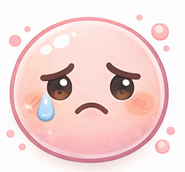
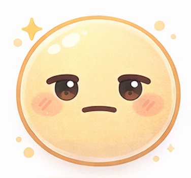
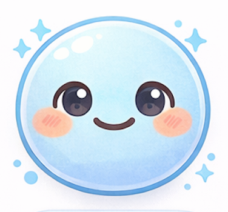
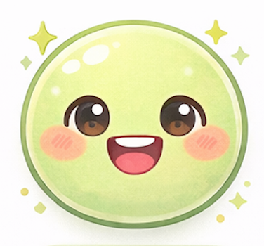
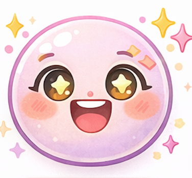

Total time spent
Words practiced
Academy Growth Tracker
Goal:
Vocabulary:
Materials:
Safety:
Step 1: Rate your child’s engagement this week. Step 2: Generate the weekly code.
第一步： 评价孩子本周的学习兴趣。第二步： 生成本周代码。
How much did your child enjoy LinguaLab this week?
Choose the face that feels closest to this week.




